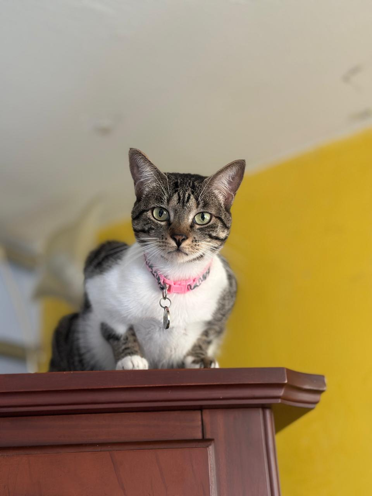
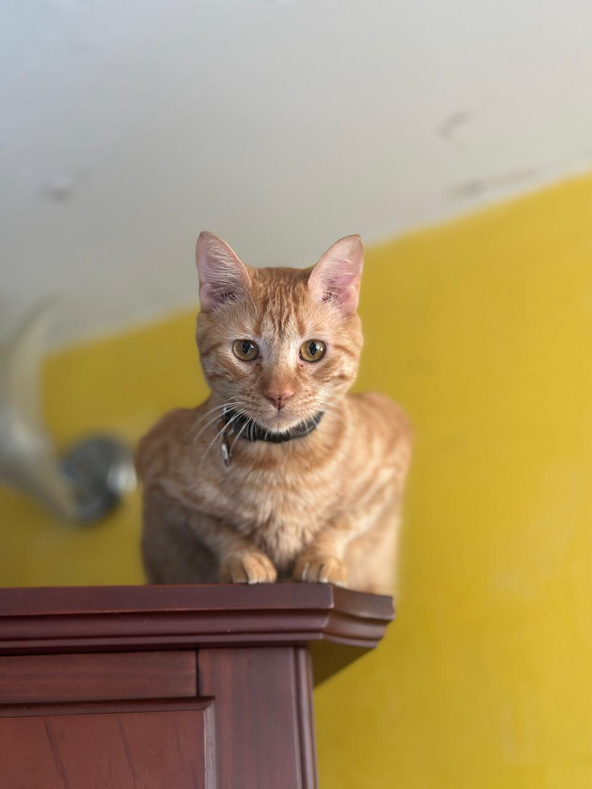

Firulais
Macho, 3 años. Juguetón, leal y muy cariñoso.
Adoptar 🐾

Mimi
Hembra, 2 años. Tranquila, independiente y mimosa.
Adoptar 🐾

Copito
Macho, 2 años. jugueton, travieso y curioso.
Adoptar 🐾

Molly
Hembra, 3 años. Tranquila, independiente y mimosa.
Adoptar 🐾

Garfield
macho, 3 años. cariñoso, consentido y mordelon .
Adoptar 🐾

Toby
Macho, 1 año. Activo, ideal para familias con niños.
Adoptar 🐾